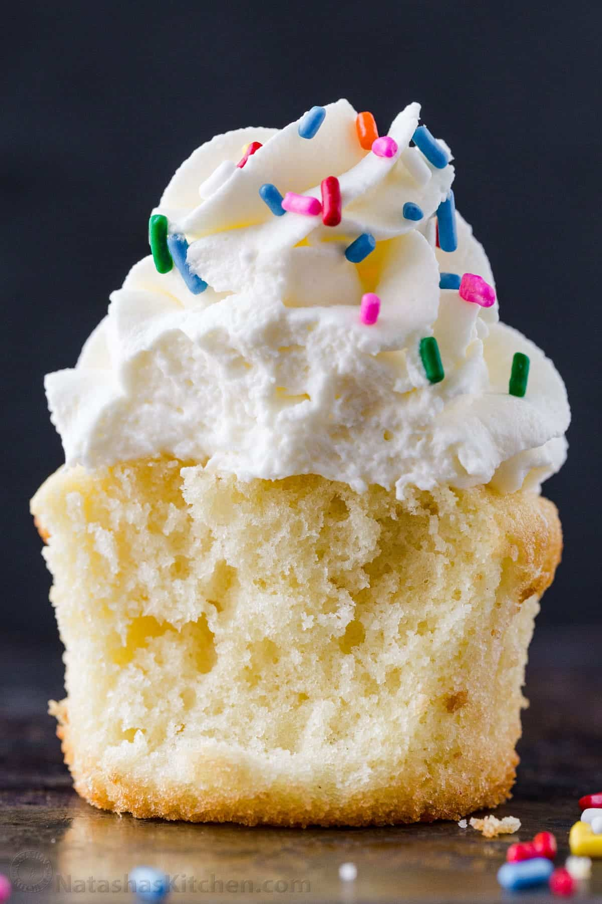

Vanilla Cupacakes
Info:
- Calories: 183 cals
- Servings: 12 cupcakes
- Total Time to Prepare: 30 mins
Ingredients
- 1 1/4 cups all-purpose flour
- 1 1/4 tsp. baking powder
- 1/2 tsp. salt
- 1/2 cup unsalted butter softened
- 3/4 cup sugar
- 2 large eggs room temperature
- 2 tsp pure vanilla extract
- 1/2 cup buttermilk or plain kefir, room temperature
Instructions
- Preheat the oven to 350F and line a cupcake/muffin pan with cupcake liners.
- In a medium bowl, whisk together 1 1/4 cups flour, 1 1/4 tsp baking powder, and 1/2 tsp salt. Set flour mix aside.
- In the bowl of an electric mixer, beat butter and sugar on medium-high speed 5 minutes until thick and fluffy, scraping down the bowl as needed.
- Add eggs one at a time, beating well with each addition then scrape down the bowl. Add 2 tsp vanilla and beat to combine.
- Reduce mixer speed to medium and add the flour mixture in thirds alternating with the buttermilk, mixing to incorporate with each addition. Scrape down the bowl as needed and beat until just combined and smooth. Divide the batter evenly into a 12-count lined muffin or cupcake pan, filling 2/3 full.
- Bake for 20-23 minutes at 350 °F, or until a toothpick inserted in the center comes out clean. Let them cool in the pan for 5 minutes, then transfer to a wire rack and cool to room temperature before frosting.
Photo

Similar Recipes
Chocolate Cupcake
Orange Cream Pop Cupcake
Salted Caramel Cupcake